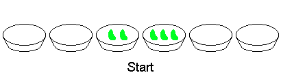

In Plato's heaven, there exist an infinite number of bowls in a straight line.
Each bowl either contains some or none of a finite number of beans.
A child plays a game, which allows only one kind of move: removing two beans from any bowl, and putting one in each of the two adjacent bowls.
The game ends when each bowl contains either one or no beans.
For example, consider two adjacent bowls containing $2$ and $3$ beans respectively, all other bowls being empty. The following eight moves will finish the game:

You are given the following sequences:
$\def\htmltext#1{\style{font-family:inherit;}{\text{#1}}}$ $ \begin{align} \qquad t_0 &= 123456,\cr \qquad t_i &= \cases{ \;\;\frac{t_{i-1}}{2},&$\htmltext{if }t_{i-1}\htmltext{ is even}$\cr \left\lfloor\frac{t_{i-1}}{2}\right\rfloor\oplus 926252,&$\htmltext{if }t_{i-1}\htmltext{ is odd}$\cr}\cr &\qquad\htmltext{where }\lfloor x\rfloor\htmltext{ is the floor function }\cr &\qquad\!\htmltext{and }\oplus\htmltext{is the bitwise XOR operator.}\cr \qquad b_i &= (t_i\bmod2^{11}) + 1.\cr \end{align} $
The first two terms of the last sequence are $b_1 = 289$ and $b_2 = 145$.
If we start with $b_1$ and $b_2$ beans in two adjacent bowls, $3419100$ moves would be required to finish the game.
Consider now $1500$ adjacent bowls containing $b_1, b_2, \ldots, b_{1500}$ beans respectively, all other bowls being empty. Find how many moves it takes before the game ends.
solve(num_bowls=2) → ?solve(num_bowls=1500) → ?solve(num_bowls=5000) → ?